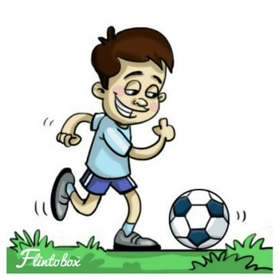

Curricular Activities

Meaning
Co-curricular activities (CCAs) earlier known as Extracurricular Activities (ECA) are the components of non-academic curriculum helps to develop various facets of the personality development of the child and students. For all-round development of the child, there is a need of emotional, physical, spiritual and moral development that is complemented and supplemented by Co-curricular Activities.
Defination
Co-curricular Activities are defined as the activities that enable to supplement and complement the curricular or main syllabi activities. These are the very important part and parcel of educational institutions to develop the students’ personality as well as to strengthen the classroom learning.
These activities are organized after the school hours, so known as extra-curricular activities. Co-curricular Activities have wide horizon to cater to the cultural, social, aesthetic development of the child.
Importance
Co-curricular activities stimulate playing, acting, singing, recitation, speaking and narrating in students.
Activities like participation in game debates, music, drama, etc., help in achieving overall functioning of education.
It enables the students to express themselves freely through debates.
Games and Sports helps to be fit and energetic to the child.
Helps to develop the spirit of healthy competition.
These activities guide students how to organize and present an activity, how to develop skills, how to co-operate and co-ordinate in different situations-all these helps in leadership qualities.
It provides the avenues of socialization, self-identification and self-assessment when the child come in contact with organizers, fellow participants, teachers, people outside the school during cultural activity.
Inculcate the values to respects other’s view and feeling.
It makes you perfect in decision making.
It develop a sense of belongingness.
CCA provide motivation for learning.
CCA develop the values like physical, psychological, Ethical, academic, civic, social, aesthetic, cultural recreational and disciplinary values
Examples
#Sports
#Musical activities
#Debate
#Model
#Art
#Drama
#Debate and discussion
#Declamation contest
#Story writing competition
#Essay writing competition
#Art craft
Sports

Want your child to learn to be responsible, empathetic, competitive and strong? Get your son or daughter to be a part of a sport and watch them grow physically, mentally and emotionally with the help of some physically engaging extra curricular activities.They learn to make decisions on behalf of the team and look at the big picture. This is a very tough skill to teach a child, but a sport can help them learn this very easily. Constant exercise and practice improves learning at school too as the mind learns to focus and retain better.
Musical Activities

In a culturally rich country like India, finding a music teacher is the easiest task. From Carnatic vocal lessons to western music, we can find instructors everywhere.
Children find this activity relaxing and helps build their confidence. Musical instruments are much more inexpensive these days. A string instrument can help children improve their concentration.
Learning to read musical notes helps the brain in multiple ways. It almost works like a foreign language being comprehended right. Learning, making mistakes, remembering and practicing teaches children to be patient and appreciate perfection.
Pallvi Pathania